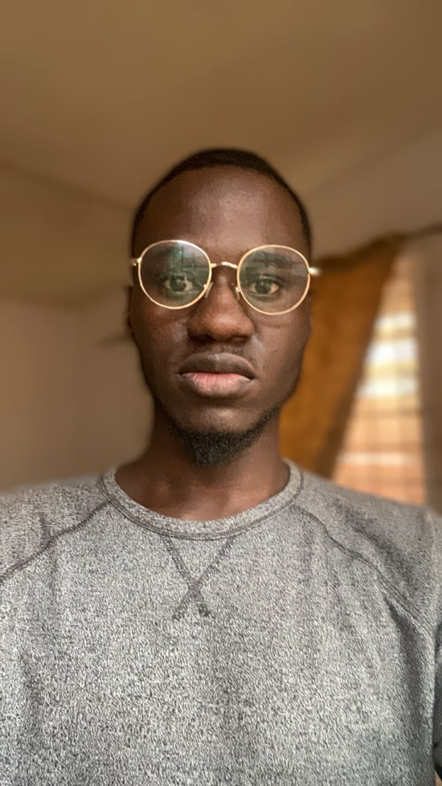

Oluwatosin Omoluwa

Summary
Dedicated professional with 4 years of experience in Content Writing. Adept at Research, Editing, and Proofreading. Aspiring to leverage my expertise at your company to contribute to its success.
Education
- Bachelor of medicine, Bachelor of Surgery - Obafemi Awolowo University (2021-2027)
Work experience
-
Web3 Content Writer - Freelance
August 2020 - Present
- Wrote well researched Crypto Articles
- Edited and Optimized Suboptimal Submitted Articles from other Freelancers
- Proofread Articles
Skills
- Writing
- Editing
- Proofreading
- Time management
- Communication
Others